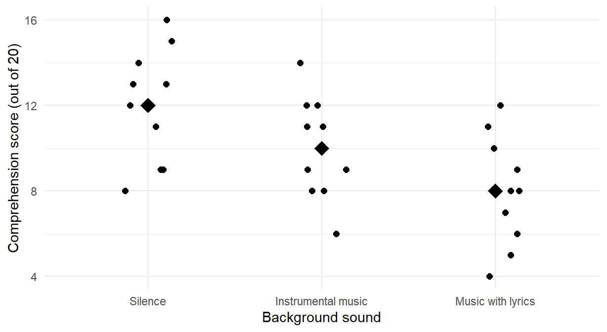
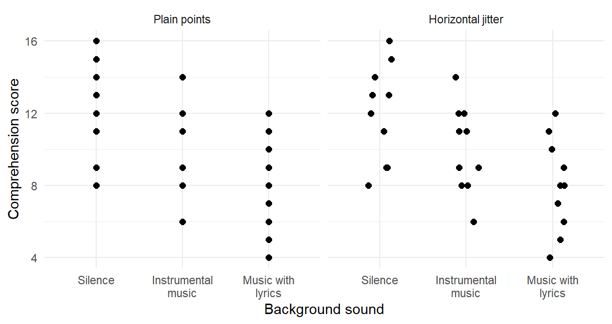
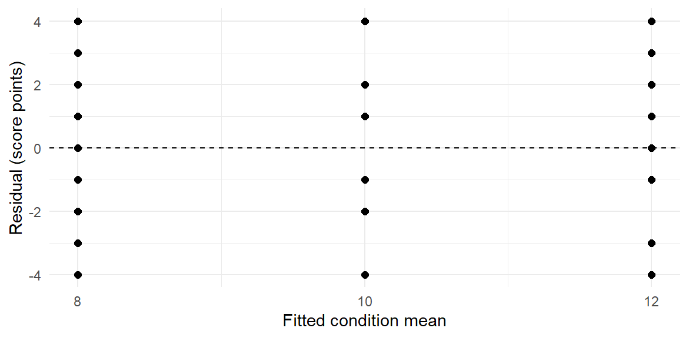
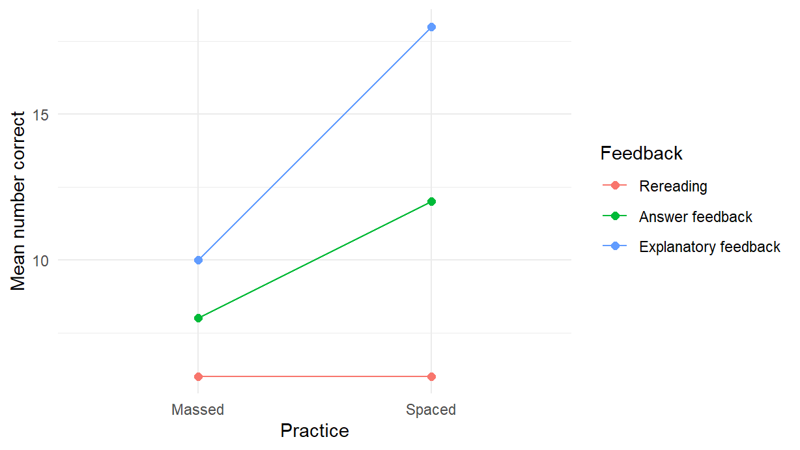
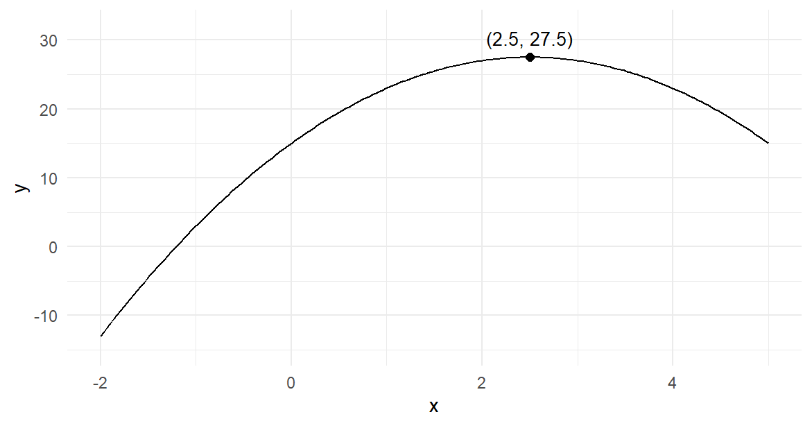
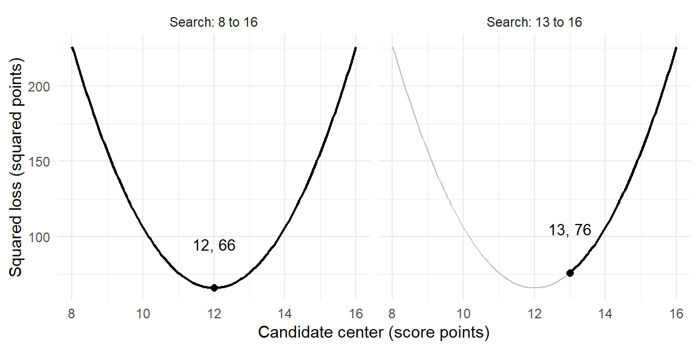
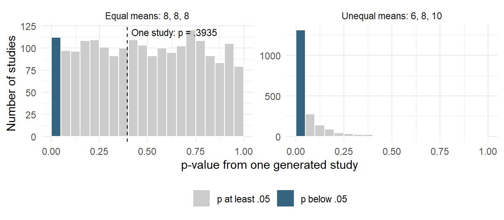
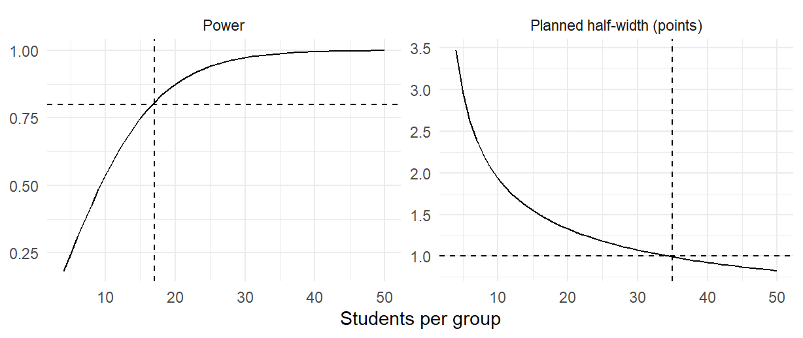

sound_data <- read.csv("background_sound.csv")
sound_data$sound <- factor(sound_data$sound,
levels = c("Silence", "Instrumental music", "Music with lyrics"))Group Comparisons and Statistical Modelling with R
NoteChapter overview
Comparing groups asks one modelling question of several means at once. This chapter reads two invented group comparisons as statistical models fitted in R. One framework runs through it: fit a stated model to the records, read what its parameters say, compare it with a simpler named model on the same records, and check the procedure by repetition.
Section 1 writes the group-mean model and reads the one-way F test as one mean against three; Section 2 asks particular comparisons inside stated families; Section 3 reads multi-way tables as sequences of named models, first for two factors with a declared interaction contrast and then for three. Section 4 turns to counts: chi-square tests of association for a two-by-two table and a larger table, and the scales on which an association’s size is stated; Section 5 shows how numerical optimization finds the best value of a criterion, first the peak of a parabola and then the least-squares centre; Section 6 repeats procedures under a stated generating model and plans power and precision. By the end you can connect each R result to its model, comparison, uncertainty and the conditions that support its interpretation.
Studies rarely stop at one mean. The invented background-sound experiment compares mean reading comprehension under three conditions, silence, instrumental music and music with lyrics, and its second invented study asks how the difference between spaced and massed practice changes across three kinds of feedback. These are the two teaching studies introduced in Chapter 4. Here each answer is also a statement about models: which model describes the records, what its parameters say, and what a simpler model leaves unexplained. Both studies are invented teaching inputs, so each analysis shows what a procedure reports, not what background sound or feedback does.
A Model for Group Means
The question and the records
Does mean reading comprehension differ across three background-sound conditions? Consider an invented experiment. Each of thirty first-year university students read the same passage for 20 minutes and then answered a 20-item reading-comprehension quiz, scored from 0 to 20. Ten students were randomly assigned to each sound condition: Silence, Instrumental music or Music with lyrics. Each student supplies one quiz score.
These values were constructed to keep the calculations transparent. They are teaching inputs, not empirical findings about music and reading. The student is both the unit of random assignment and the unit of measurement: the ten scores in a condition come from ten different students, not from repeated measurements of one student. Silence is the natural reference condition, so it comes first.
The file background_sound.csv holds these thirty records, with the columns student, sound and score. read.csv() reads it into the data frame sound_data, and factor() orders its sound conditions Silence, Instrumental music and Music with lyrics. The next calls count the students and summarize their scores within each condition.
table(sound_data$sound)
#>
#> Silence Instrumental music Music with lyrics
#> 10 10 10
tapply(sound_data$score, sound_data$sound, mean)
#> Silence Instrumental music Music with lyrics
#> 12 10 8
tapply(sound_data$score, sound_data$sound, sd)
#> Silence Instrumental music Music with lyrics
#> 2.708012802 2.403700850 2.581988897Each condition holds ten students. The condition means are 12, 10 and 8 correct answers, and the grand mean of all thirty scores is 10. The SDs, 2.7080, 2.4037 and 2.5820, are similar without being identical. Before asking whether a difference is large relative to its uncertainty, we can see each difference on the quiz’s own scale: Instrumental music lies 2 points and Music with lyrics 4 points below Silence.
Figure 1 shows every student beside the three condition means. Each point is one student’s score, moved a small random distance sideways so that equal scores in a condition stay visible, and each diamond marks a condition mean. Two kinds of variation appear together. The diamonds step down by 2 points from Silence to Instrumental music and by another 2 points to Music with lyrics, while the ten scores in each condition spread across 8 points around their own diamond. Whether a 2-point step is large depends on that spread within conditions, and the model below turns this visual comparison into numbers.
In the demonstration, group_means contains the three condition means. Its layer puts each mean beside the individual scores it summarizes, using the same condition positions and score scale.
library(ggplot2)
group_means <- aggregate(score ~ sound, data = sound_data, mean)
ggplot(sound_data, aes(sound, score)) +
geom_jitter(width = .15, height = 0) +
geom_point(data = group_means, shape = 18, size = 5)
The points and mean diamonds represent different quantities: individual observations and a summary of each condition. Section 1.4 examines how such choices change what a graph makes visible.
The group-mean model
The one-way model for student \(i\) in sound condition \(j\) is
\[ Y_{ij}=\mu_j+\varepsilon_{ij},\qquad \varepsilon_{ij}\sim N(0,\sigma^2), \]
with independent errors. Its four parameters are the three condition means \(\mu_S\), \(\mu_I\) and \(\mu_L\), and the common error SD \(\sigma\). Each mean describes one sound condition’s process; each error is a student’s departure from that mean. These are working model conditions, which the invented data do not establish.
Least squares chooses each fitted mean to minimize the sum of squared residuals within its condition, giving the condition’s sample mean; Section 5.2 examines that fitting criterion. Thus \(\widehat y_{ij}=\bar y_j\) and \(e_{ij}=y_{ij}-\bar y_j\). For Silence the fitted values are all 12 and the residuals are \(-4,-3,-3,-1,0,1,1,2,3,4\): the vertical distances from the mean diamond in Figure 1.
A factor with three levels can also enter a linear model as two indicator variables. Let \(D_I=1\) for Instrumental music and 0 otherwise, and let \(D_L=1\) for Music with lyrics and 0 otherwise. Silence has both indicators 0. The fitted equation is
\[ \widehat y=12-2D_I-4D_L. \]
Substituting the indicators gives 12 for Silence, \(12-2=10\) for Instrumental music and \(12-4=8\) for Music with lyrics. The intercept is the reference mean; each other coefficient is a difference from that mean, negative here because both music conditions have lower means than Silence. The factor order in the original setup makes Silence the reference level.
indicator_fit <- lm(score ~ sound, data = sound_data)
coef(indicator_fit)
#> (Intercept) soundInstrumental music
#> 12 -2
#> soundMusic with lyrics
#> -4lm() and aov() describe the same set of fitted means, so they give the same residuals and the same ANOVA table. The formula names the outcome and the explanatory variable; the study’s design supplies the independence assumption. A different reference level changes which comparisons the coefficients name, but not the fitted means, the residuals or the table: with Instrumental music as the reference, the coefficients become 10, 2 and \(-2\). This indicator representation prepares the named models of Sections 1.3 and 3.2.
The decomposition and the F test
Fitting one mean leaves the total sum of squares, while fitting separate group means leaves the within-group sum of squares. On the same thirty scores these are 258 and 178; their reduction, 80, is the between-group sum of squares. In the figure these are the steps between the diamonds and the spread of the points around their own diamond. aov() fits the same group-mean model as lm(), and anova() prints its decomposition.
one_fit <- aov(score ~ sound, data = sound_data)
anova(one_fit)| Df | Sum Sq | Mean Sq | F value | Pr(>F) | |
|---|---|---|---|---|---|
| sound | 2 | 80 | 40.000000000 | 6.06741573 | 0.006665059 |
| Residuals | 27 | 178 | 6.592592593 | NA | NA |
The two numerator degrees of freedom count the additional mean parameters beyond one common mean. The 27 residual degrees of freedom are the thirty observations less three fitted means. Dividing a sum of squares by its degrees of freedom gives a mean square; the residual mean square, \(178/27=6.5926\), estimates the common error variance.
| Source | SS | df | MS | F | p |
|---|---|---|---|---|---|
| Sound condition | 80 | 2 | 40.0000 | 6.0674 | .0067 |
| Within groups | 178 | 27 | 6.5926 | ||
| Total | 258 | 29 |
Read the result as a comparison of two named models on the same thirty students. The null \(H_0:\mu_S=\mu_I=\mu_L\) says that the one-mean model, \(Y_{ij}=\mu+\varepsilon_{ij}\), describes the scores. It fits the grand mean 10 to every student and leaves the total, \(SS_T=258\) on 29 df, as its residual sum of squares. The group-mean model leaves \(SS_W=178\) on 27 df. The F statistic divides the drop in residual sum of squares per added parameter by the larger model’s residual mean square:
\[ F=\frac{(258-178)/(29-27)}{178/27}=\frac{40}{6.5926}=6.0674. \]
common_fit <- lm(score ~ 1, data = sound_data)
anova(common_fit, indicator_fit)The numerator is \(MS_B\) and the denominator \(MS_W\). Under independent Normal errors with a common variance, the exact reference is \(F_{2,27}\). The p-value .0067 is the probability of an F statistic at least this large under the one-mean null model and its conditions. It provides evidence against that model; Section 3.2 uses the same comparison principle for two models of the feedback study. Rejection establishes an omnibus difference, not a difference between every pair or a real effect of music on reading from these invented observations.
The score differences remain 2 and 4 points below Silence. Alongside them, \(\eta^2=SS_B/SS_T=80/258=.3101\) is the share of the one-mean model’s residual sum of squares that the three group means remove, an in-sample variation summary. It is neither a causal probability nor a replacement for an interval. Subtracting the fitted-means contribution expected from noise gives the bias-adjusted omega-squared, .2525.
Plotting: what does each mark represent?
A graph starts with a question about the records. In the sound study, we want to see individual scores, their within-condition spread and the location of each condition. The ggplot2 package describes a graph by its data, a mapping of variables to visual positions or colour, and layers of marks. Mapping sound to the horizontal position and score to the vertical position makes the comparison concrete. Changing the marks can reveal or conceal features without changing the data.
ggplot(sound_data, aes(sound, score)) + geom_point()
ggplot(sound_data, aes(sound, score)) +
geom_jitter(width = .15, height = 0)The first call places each student exactly at the recorded condition and score. Tied scores fall on top of each other: 30 students occupy only 23 distinct point locations. The second separates the points slightly from side to side. Its zero vertical displacement keeps every score at its recorded height. Figure 2 compares the two views on the same scale. The code shows the essential mapping; labels and panel arrangement make the printed comparison easier to read.

Predict, then explain. If only the horizontal displacement changes, will the fitted means, residuals or F test change? They remain identical: the graphical displacement is separate from the recorded scores used by the model. Conversely, moving scores vertically in the actual data would change the analysis. A useful graph makes this distinction clear.
The mean diamonds in Figure 1 add a second kind of mark: each represents a calculated group mean, rather than another student. The dots show spread and overlap; the diamonds make the comparison of means easier to see. Later graphs use lines to connect cell means or candidate criterion values, and histograms to summarize repeated studies. In each case, begin by asking what one mark represents and what comparison the axes make possible.
Contrasts and Comparison Families
Contrasts and their standard error
Suppose the two questions compare each music condition with Silence: Instrumental music versus Silence, and Music with lyrics versus Silence. In the order Silence, Instrumental music, Music with lyrics, their coefficient vectors are \((-1,1,0)\) and \((-1,0,1)\). Each vector sums to zero. A quantity
\[ C=\sum_jc_j\mu_j,\qquad \sum_jc_j=0, \]
is a contrast of the process means. Its estimate replaces process means with the observed group means: \(\widehat C=\sum_jc_j\bar y_j\). Thus our estimates are \(-2\) and \(-4\) points: both music conditions lie below Silence. Calling a comparison a contrast specifies this mathematical form; it does not say whether the comparison was planned before seeing the results or selected afterward. That is additional information about the analysis.
For independent groups with a common error variance, the estimated variance of a weighted sum adds each mean’s variance with its squared weight. Using the common estimate \(MS_W\) gives
\[ SE(\widehat C)=\sqrt{MS_W\sum_j\frac{c_j^2}{n_j}}. \]
Each comparison uses two of the means, so both have estimated SE \(\sqrt{(178/27)(1/10+1/10)}=1.1483\) points. The third condition still contributes to the common error estimate and its 27 residual degrees of freedom. This matters when comparing these results with an analysis restricted to only two conditions.
A declared family: Bonferroni
An individual 95% interval uses a .05 error probability for that one comparison. The declared family here is each music condition against Silence. To cover both of its comparisons with at least 95% familywise confidence, Bonferroni allocates .025 to each two-sided comparison. Each tail then receives \(.05/(2\times2)=.0125\). The calibration uses the \(t\) reference distribution with the model’s 27 residual degrees of freedom (Student, 1908), giving the critical value
\[ t_{1-.05/(2\times2),27}=2.3734. \]
The estimates and SEs stay the same; the larger multiplier widens each interval to \(\widehat C\pm2.3734\,SE(\widehat C)\), and Table 2 reports both intervals.
| Comparison | Estimate | SE | Simultaneous interval | Adjusted p |
|---|---|---|---|---|
| Instrumental music minus Silence | \(-2\) | 1.1483 | [\(-4.7253\), 0.7253] | .1859 |
| Music with lyrics minus Silence | \(-4\) | 1.1483 | [\(-6.7253\), \(-1.2747\)] | .0034 |
Multiplying each raw p-value by two and capping at one gives the corresponding Bonferroni-adjusted p-value. Music with lyrics minus Silence is distinguishable from zero with this familywise calibration: its whole interval lies below zero. The Instrumental-music interval includes zero although the omnibus ANOVA rejected equality. It allows a difference from 4.7253 points below Silence to 0.7253 points above it. The two results are compatible, because the omnibus test and each contrast address different statements.
The family calibration has a purpose and a price. The familywise error rate is the probability of at least one false rejection among the comparisons in a family. If both null hypotheses were true, two independent comparisons, each calibrated at .05, would give a familywise error probability of \(1-.95^2=.0975\). These two comparisons share the Silence mean, and dividing .05 across the family bounds the rate at .05 under any dependence between them, regardless of which null hypotheses are true. The guarantee is paid for in width, which Section 2.3 compares, and in power, which Section 6.2 quantifies. Declare the family from the question before seeing the results; enlarging it afterwards spends power on questions nobody asked.
All pairs and every contrast: Tukey and Scheffé
If the question includes every pair, there are three comparisons. Tukey’s procedure uses the joint distribution of pairwise mean differences under the common-variance Normal-error model. TukeyHSD() supplies those simultaneous intervals and their adjusted p-values (Tukey, 1953).
TukeyHSD(one_fit, which = "sound", conf.level = .95)
#> Tukey multiple comparisons of means
#> 95% family-wise confidence level
#>
#> Fit: aov(formula = score ~ sound, data = sound_data)
#>
#> $sound
#> diff lwr
#> Instrumental music-Silence -2 -4.84703504
#> Music with lyrics-Silence -4 -6.84703504
#> Music with lyrics-Instrumental music -2 -4.84703504
#> upr p adj
#> Instrumental music-Silence 0.8470350401 0.2084569155
#> Music with lyrics-Silence -1.1529649599 0.0046975772
#> Music with lyrics-Instrumental music 0.8470350401 0.2084569155The output labels each subtraction direction. Music with lyrics minus Silence is \(-4\), with interval [\(-6.847\), \(-1.153\)] and adjusted p .0047. Instrumental music minus Silence and Music with lyrics minus Instrumental music both equal \(-2\), with interval [\(-4.847\), 0.847] and adjusted p .2085. Table 3 sets one comparison, Instrumental music minus Silence, under four calibrations. The fourth, Scheffé, protects every contrast of the three means.
| Calibration | Family protected | Multiplier | 95% interval |
|---|---|---|---|
| Pointwise t | This comparison alone | 2.0518 | [\(-4.3561\), 0.3561] |
| Bonferroni | The two comparisons with Silence | 2.3734 | [\(-4.7253\), 0.7253] |
| Tukey | All three pairs | 2.4794 | [\(-4.8470\), 0.8470] |
| Scheffé | Every contrast of the three means | 2.5900 | [\(-4.9740\), 0.9740] |
The estimate, \(-2\), and its SE, 1.1483, are the same in every row; only the multiplier changes. For the four calibrations in this table, protecting a larger family uses a larger multiplier at familywise level .05, so the intervals are wider. Here the pointwise multiplier is \(t_{.975;27}\), the Tukey multiplier is \(q_{.95;3,27}/\sqrt2\), and the Scheffé multiplier is \(\sqrt{2F_{.95;2,27}}\). Scheffé covers the widest family: it also protects non-pairwise questions such as the average of the two music conditions minus Silence, an estimate of \(-3\) points. An interval should therefore be read together with the comparison and the family it represents.
The all-pairs family also covers a comparison chosen after seeing the means. Suppose Music with lyrics minus Silence were reported because it is the largest observed difference. That choice looked at all three pairs, so its calibration would come from the all-pairs family, [\(-6.8470\), \(-1.1530\)], rather than from the declared two-comparison family, [\(-6.7253\), \(-1.2747\)]. An omnibus rejection does not by itself protect any comparison selected after examining the means. Conversely, a separately specified contrast can have its own valid uncertainty procedure without requiring omnibus rejection as an automatic preliminary gate. The relevant information is the question, selection process and calibration, rather than a universal sequence of significance decisions.
Conditions and Welch’s one-way ANOVA
The common-variance model assumes that within-group variability estimates one shared error variance. In a real study, design information and observed patterns help assess that working model. A small normality or variance test cannot certify it, and ten students per condition give limited information about the error distribution. In these invented data the three SDs, 2.7080, 2.4037 and 2.5820, are similar by construction, and every condition’s residuals lie between \(-4\) and 4. In Figure 1 each residual is a point’s vertical distance from its diamond, and the three conditions spread alike.
Centering each score on its own fitted mean makes the spread comparison more direct. In Figure 3, the three vertical strips correspond to fitted means 8, 10 and 12. A residual above zero is a score above its condition mean. The strips have similar spread here; in empirical data, a much wider strip would challenge a common error variance. Only three fitted values are available, so the plot is a comparison of group spreads, not a detailed investigation of curvature across a continuous predictor. The deliberately constructed regularity illustrates what to inspect; it cannot establish the model’s conditions or independence of students.
residual_data <- data.frame(fitted = fitted(one_fit),
residual = resid(one_fit))
ggplot(residual_data, aes(fitted, residual)) + geom_point() +
geom_hline(yintercept = 0)
For independent groups whose error variances may differ, Welch’s one-way procedure provides an alternative (Welch, 1947). It is the several-group counterpart of the unequal-variance two-group t test. R selects it by default in oneway.test() (R Core Team, 2025):
oneway.test(score ~ sound, data = sound_data)
#>
#> One-way analysis of means (not assuming equal variances)
#>
#> data: score and sound
#> F = 5.5144397, num df = 2.000000, denom df = 17.956056,
#> p-value = 0.01358053It gives \(F(2, 17.9561)=5.5144\) and p .0136, beside the pooled \(F(2,27)=6.0674\) and p .0067. Welch weights each condition mean by \(n_j/s_j^2\), the inverse of its own estimated sampling variance, and refers the statistic to fewer denominator degrees of freedom because each condition now estimates its own variance. With similar observed SDs the two procedures reach the same conclusion at .05, while their p-values differ. Each p-value belongs to its own variance model and small-sample calibration, so the two are results to explain through those assumptions rather than votes on which numerical conclusion to prefer. With small groups or clearly unequal spreads, the model choice can matter appreciably.
For the same two groups and common-variance denominator, the pooled t test (var.equal = TRUE) and ANOVA give \(F=t^2\) and the same two-sided p-value; neither R’s default Welch test nor our three-group contrast, which also uses the third condition’s residuals, is that matched calculation.
Multi-Way ANOVA and Nested Models
A multi-way design crosses two or more factors. This section reads the two-way feedback-by-practice study as a sequence of named models, asks one declared interaction question, and then adds quiz timing as a third factor.
Cells and margins
A second invented study has 24 students studying the same fractions material. Each is individually assigned to one combination of three feedback conditions and two practice schedules, four students per cell, and takes a common 20-item quiz one week after the final practice. A cell is one feedback/practice combination. The question is how the Spaced-minus-Massed comparison changes across feedback conditions.
| Feedback | Massed scores | Spaced scores |
|---|---|---|
| Rereading | 4, 5, 7, 8 | 4, 5, 7, 8 |
| Answer feedback | 6, 7, 9, 10 | 10, 11, 13, 14 |
| Explanatory feedback | 8, 9, 11, 12 | 16, 17, 19, 20 |
These values were constructed to make the calculations transparent. They are teaching inputs, not empirical evidence that one feedback condition works better. Each score comes from a different student; the four scores within a cell are not repeated measurements of one student. Repeated patterns in their deviations were deliberately chosen and cannot establish assumptions about a population.
The file feedback_practice.csv holds these scores, their feedback and practice conditions, and a student identifier. The setup reads it into the data frame feedback_data and fixes the order of each factor’s levels.
feedback_data <- read.csv("feedback_practice.csv")
feedback_data$feedback <- factor(feedback_data$feedback,
levels = c("Rereading", "Answer feedback", "Explanatory feedback"))
feedback_data$practice <- factor(feedback_data$practice,
levels = c("Massed", "Spaced"))Computing cell counts and means before fitting any model makes the six cells and their denominators visible.
table(feedback = feedback_data$feedback,
practice = feedback_data$practice)
#> practice
#> feedback Massed Spaced
#> Rereading 4 4
#> Answer feedback 4 4
#> Explanatory feedback 4 4
cell_mean <- tapply(feedback_data$score,
list(feedback_data$feedback, feedback_data$practice), mean)
cell_mean
#> Massed Spaced
#> Rereading 6 6
#> Answer feedback 8 12
#> Explanatory feedback 10 18Table 5 adds the margins and the three practice changes to these cell means.
| Feedback | Massed | Spaced | Equally weighted margin | Spaced minus Massed |
|---|---|---|---|---|
| Rereading | 6 | 6 | 6 | 0 |
| Answer feedback | 8 | 12 | 10 | 4 |
| Explanatory feedback | 10 | 18 | 14 | 8 |
| Practice margin | 8 | 12 | 10 | 4 |
Each cell has four students, so averaging the two practice cells equally gives the feedback group’s overall mean. Similarly, each practice margin averages equally across the three feedback conditions. In an unbalanced design, a margin must specify its weights: the observed mix of students and an equally weighted target can answer different questions. In this balanced design each main effect is the average of its simple effects: the 4-point practice difference is \((0+4+8)/3\). The additive model below imposes that one difference on every feedback condition.
Figure 4 draws the six cell means with one line for each feedback condition. Each line joins two separate cell means; it does not trace individual students across repeated measurements.
cell_plot <- aggregate(score ~ feedback + practice,
data = feedback_data, mean)
ggplot(cell_plot, aes(practice, score, colour = feedback,
group = feedback)) + geom_line() + geom_point()
The observed changes are 0, 4 and 8 points, so the three lines have different slopes. This describes interaction in the observed means. Inference about a process interaction additionally requires a model and a measure of residual variation.
Named models and the nested-model F
The additive model is a restricted version of the full model
\[ Y_{ijk}=\mu+\alpha_j+\beta_k+(\alpha\beta)_{jk}+\varepsilon_{ijk}. \]
Here \(j\) indexes feedback, \(k\) practice and \(i\) students within a cell. With sum-to-zero identifying constraints, \(\mu\) is the grand mean, \(\alpha_j\) and \(\beta_k\) describe marginal departures from it, and \((\alpha\beta)_{jk}\) the remaining cell departure. These constraints prevent the effects from shifting freely while preserving the same means. One grand mean, two feedback directions, one practice direction and two interaction directions describe six fitted cell means, leaving \(24-6=18\) residual df. The independent Normal errors have common variance.
The additive model, score ~ feedback + practice, gives every feedback condition the same Spaced-minus-Massed difference. Its fitted coefficients are 4 for Rereading under Massed practice, 4 and 8 for Answer and Explanatory feedback minus Rereading, and 4 for Spaced minus Massed, the average of Section 3.1’s three changes. The full model, score ~ feedback * practice, fits the six cell means and lets that difference vary. The formula expands to feedback + practice + feedback:practice.
Fit both models to the same 24 students. They leave residual sums of squares 124 on 20 df and 60 on 18 df, respectively. Their comparison is
\[ F=\frac{(124-60)/(20-18)}{60/18}=9.6, \]
with 2 and 18 df and \(p=.0015\). The denominator comes from the larger model, which estimates error variance without imposing the common practice difference being tested. This is the interaction test and the same comparison principle as Section 1.3’s one mean against three means.
additive_fit <- lm(score ~ feedback + practice, data = feedback_data)
full_fit <- lm(score ~ feedback * practice, data = feedback_data)
coef(additive_fit)
#> (Intercept) feedbackAnswer feedback
#> 4 4
#> feedbackExplanatory feedback practiceSpaced
#> 8 4
anova(additive_fit, full_fit)| Res.Df | RSS | Df | Sum of Sq | F | Pr(>F) |
|---|---|---|---|---|---|
| 20 | 124 | NA | NA | NA | NA |
| 18 | 60 | 2 | 64 | 9.6 | 0.0014540056 |
Keep the response and the records explicitly the same: default missing-value removal can otherwise change the comparison.
The full factorial table can also be read as a sequence of named models: one mean (score ~ 1, RSS 476 on 23 df), feedback only (score ~ feedback, 220 on 21), additive (124 on 20) and full (60 on 18). Each row’s sum of squares is the reduction from one fit to the next, and every F row uses the full model’s residual mean square, \(60/18=3.3333\).
two_fit <- aov(score ~ feedback * practice, data = feedback_data)
anova(two_fit)| Df | Sum Sq | Mean Sq | F value | Pr(>F) | |
|---|---|---|---|---|---|
| feedback | 2 | 256 | 128.000000000 | 38.4 | 0.0000003208 |
| practice | 1 | 96 | 96.000000000 | 28.8 | 0.0000422875 |
| feedback:practice | 2 | 64 | 32.000000000 | 9.6 | 0.0014540056 |
| Residuals | 18 | 60 | 3.333333333 | NA | NA |
| Source | Models defining the SS reduction | SS | df | MS | F | p |
|---|---|---|---|---|---|---|
| Feedback | One mean, then feedback only | 256 | 2 | 128.0000 | 38.4 | < .0001 |
| Practice | Feedback only, then additive | 96 | 1 | 96.0000 | 28.8 | < .0001 |
| Interaction | Additive, then full | 64 | 2 | 32.0000 | 9.6 | .0015 |
| Residual | Full model | 60 | 18 | 3.3333 | ||
| Total | One-mean model | 476 | 23 |
The first two rows use successive models for their numerators and the full model for their common error denominator; they are not standalone tests of the two models named in those rows. A sequence stopping at the additive model would divide by \(124/20=6.2\) and give 20.6452 rather than 38.4 for the feedback row. The interaction row is the additive-versus-full test. The three questions are equal feedback margins averaged equally over practice, equal practice margins averaged equally over feedback, and a common practice difference across feedback conditions.
The balanced layout makes these source components orthogonal, so changing the order of the factors leaves the table unchanged. A single-model anova() table produces sequential sums of squares, however, and this convenience does not extend automatically to unequal cells.
Suppose the two Explanatory-Spaced students scoring 19 and 20 were unavailable. Counts become 4, 4, 4, 4, 4 and 2, leaving 16 residual df. The equally weighted Spaced margin is \((6+12+16.5)/3=11.5\), whereas the ten remaining Spaced students average 10.5: two different questions about weights. Table 7 fits the full model to these 22 students with each formula order.
dat <- subset(feedback_data, student < 23)
anova(lm(score ~ feedback * practice, data = dat))
anova(lm(score ~ practice * feedback, data = dat))| Term | Formula feedback * practice |
Formula practice * feedback |
|---|---|---|
| Feedback | 139.7576 | 157.7500 |
| Practice | 52.0833 | 34.0909 |
| Interaction | 36.2500 | 36.2500 |
| Residual | 50.5000 | 50.5000 |
With feedback first, the sequence is one mean, feedback only, additive, then full; with practice first it is one mean, practice only, additive, then full. Thus the feedback row measures feedback against one mean (139.7576) in one order and feedback added to practice (157.7500) in the other. The final step stays additive against full. Its RSS values are 86.75 on 18 df and 50.50 on 16 df, giving \(F(2,16)=5.7426\), \(p=.0132\), in either order. One sequential table does not give order-free tests of main effects with unequal cells; naming the two models does.
A declared interaction contrast and the price of selection
The study plan declared one interaction comparison before any scores were seen: whether spacing helps more under Answer feedback than under Rereading. Its difference of differences is
\[ \widehat{DD}=(12-8)-(6-6)=4. \]
The coefficients are \((1,-1,-1,1)\) in cell order Rereading-Massed, Rereading-Spaced, Answer-Massed, Answer-Spaced. Four different sets of students supply the cell means. Under independent errors with common variance, their estimated variances add:
\[ SE(\widehat{DD})=\sqrt{MS_E(1/4+1/4+1/4+1/4)}=1.8257. \]
Declared as the one comparison in advance, it is a family of one: its pointwise 95% interval, with multiplier \(t_{.975;18}=2.1009\), is \([0.1643,7.8357]\), the warranted statement. Had the same contrast been picked after inspecting the plot, the interval would need to cover every difference of differences the plot could have suggested, the two-dimensional interaction space. To see its two directions, start with the practice changes of 0, 4 and 8 points. Answer-minus-Rereading compares \(4-0=4\); Explanatory-minus-Answer compares \(8-4=4\). Explanatory-minus-Rereading, \(8-0=8\), is their sum, so it supplies no third independent direction. The first two comparisons are linearly independent, but their estimates are statistically dependent: both use Answer feedback’s estimated practice change.
Section 2.3’s Scheffé method uses \(\sqrt{2F_{.95;2,18}}=2.6663\) for this family. The same estimate and SE would then give \([-0.868,8.868]\).
The counterfactual Scheffé interval includes zero although the interaction F test rejects. The F test asks whether both interaction directions are zero jointly; the interval covers one direction with protection over all of them. Other directions may carry substantial evidence, so neither result cancels the other. Table 8 sets the declared DD beside Answer feedback’s simple practice effect, which happens to share its estimate, 4.
| Quantity | Estimate | SE | 95% interval | Calibration |
|---|---|---|---|---|
| Answer’s simple practice effect | 4 | 1.2910 | [1.2877, 6.7123] | Pointwise |
| Answer-minus-Rereading DD, declared in advance | 4 | 1.8257 | [0.1643, 7.8357] | Pointwise (family of one) |
| The same DD, had it been picked after the plot | 4 | 1.8257 | [\(-0.8680\), 8.8680] | Scheffé (interaction family) |
The two DD intervals differ only in their multiplier; the comparison’s history decides which applies. Answer’s simple effect compares two cell means, so its SE, \(\sqrt{2MS_E/4}=1.2910\), is smaller. It contains an overall practice component as well as an interaction component and therefore lies outside the interaction-only family; that family’s Scheffé guarantee does not transfer to it. Choosing the narrower interval after seeing its conclusion does not keep a family’s guarantee. Name the quantity, its history, family and interval together.
Report magnitude first in score points: the practice differences are 0, 4 and 8, and the declared DD is 4 with SE 1.8257. Variation shares may follow with named denominators. The interaction sum of squares over the total is \(64/476=.1345\); over the interaction and residual sums of squares it is \(64/124=.5161\), the interaction’s partial eta-squared. Both are in-sample summaries of an authored design and neither replaces the pattern of practice differences.
A third factor: three-way ANOVA
Chapter 4, Section 4.7, added quiz timing to this study: 24 further students, four to each feedback-by-practice cell, took the quiz right after their final practice instead of one week later. The 48 students fill twelve cells of a \(3\times2\times2\) layout. The file feedback_practice_timing.csv holds their scores, with the one-week students of Section 3.1 as students 1–24. The data frame timing_data keeps the three factors in the chapter’s level order.
timing_data <- read.csv("feedback_practice_timing.csv")
timing_data$feedback <- factor(timing_data$feedback,
levels = c("Rereading", "Answer feedback", "Explanatory feedback"))
timing_data$practice <- factor(timing_data$practice,
levels = c("Massed", "Spaced"))
timing_data$timing <- factor(timing_data$timing,
levels = c("Right after practice", "One week later"))The formula feedback * practice * timing expands to the three main effects, the three two-way interactions and the three-way interaction, the model that fits all twelve cell means. Its ANOVA table reproduces Chapter 4’s three-way table row for row.
three_fit <- aov(score ~ feedback * practice * timing, data = timing_data)
print(anova(three_fit), digits = 6)
#> Analysis of Variance Table
#>
#> Response: score
#> Df Sum Sq Mean Sq F value Pr(>F)
#> feedback 2 450.667 225.3333 67.6 6.4622e-13
#> practice 1 108.000 108.0000 32.4 1.7928e-06
#> timing 1 133.333 133.3333 40.0 2.5656e-07
#> feedback:practice 2 32.000 16.0000 4.8 0.014193
#> feedback:timing 2 2.667 1.3333 0.4 0.673262
#> practice:timing 1 12.000 12.0000 3.6 0.065823
#> feedback:practice:timing 2 32.000 16.0000 4.8 0.014193
#> Residuals 36 120.000 3.3333print() with digits = 6 shows six significant digits, enough to match Chapter 4’s table while keeping each row on one line.
Each row is again a comparison of named models, read from the highest-order row down. The three-way row compares the full model with score ~ (feedback + practice + timing)^2, whose ^2 keeps the main effects and every two-way interaction but drops the three-way term:
pairs_fit <- lm(score ~ (feedback + practice + timing)^2,
data = timing_data)
full_three <- lm(score ~ feedback * practice * timing,
data = timing_data)
anova(pairs_fit, full_three)| Res.Df | RSS | Df | Sum of Sq | F | Pr(>F) |
|---|---|---|---|---|---|
| 38 | 152 | NA | NA | NA | NA |
| 36 | 120 | 2 | 32 | 4.8 | 0.0141931191 |
The model without the three-way term leaves RSS 152 on 38 df and the full model 120 on 36, so
\[ F=\frac{(152-120)/(38-36)}{120/36}=4.8, \]
with 2 and 36 df and \(p=.0142\), the A × B × C row. The denominator is again the larger model’s within-cell mean square, 3.3333, the same value as in the two-way analysis because every cell’s residuals are \(-2\), \(-1\), 1 and 2. The design is balanced, so the order of the factors in the formula leaves every row unchanged.
The three-way row says that the feedback-by-practice pattern differs between the timings, so the averaged two-way row describes neither timing. The practice changes within each timing show the pattern itself:
cell_means <- tapply(timing_data$score, list(timing_data$feedback,
timing_data$practice, timing_data$timing), mean)
practice_change <- cell_means[, "Spaced", ] - cell_means[, "Massed", ]
practice_change
#> Right after practice One week later
#> Rereading 2 0
#> Answer feedback 2 4
#> Explanatory feedback 2 8tapply() with three grouping factors returns a three-way array of cell means, one feedback-by-practice table per timing; subtracting the Massed column from the Spaced column within each table gives the practice change for every feedback condition and timing. Right after practice spacing adds 2 points under every kind of feedback; one week later it adds 0, 4 and 8. Report these two patterns separately, as Chapter 4 recommends when a higher-order interaction is present.
One three-way contrast, declared in advance, is the change in Section 3.3’s difference of differences: Answer’s practice change minus Rereading’s, one week later minus right after practice, \((4-0)-(2-2)=4\). It combines eight cell means with coefficients \(\pm1\), each mean resting on four students, so
\[ SE=\sqrt{MS_E\,(8\times1/4)}=\sqrt{3.3333\times2}=2.5820, \]
\(\sqrt2\) times the two-way contrast’s 1.8257. With \(t_{.975;36}=2.0281\), its pointwise 95% interval is \([-1.2365,9.2365]\) and \(p=.1301\). The 2-df three-way row rejects while this one declared direction does not: as in Section 3.3, the F test asks whether both three-way directions are zero jointly, and the other direction, Explanatory’s practice change minus Answer’s, also changes by 4 points between the timings. Neither result cancels the other, and a contrast chosen after seeing the table would need a family such as Scheffé’s.
The Chi-Square Test
Not every outcome is a score. When each record falls into one category, such as completed or not, the data are counts in a table, and Chapter 3, Section 6, built the chi-square test of association for such a table. This section carries out that test in R, extends it to a table with more than two rows or columns, and sets out the scales on which the size of an association is stated.
The two-by-two table
Table 9 returns to Chapter 3’s invented completion example. It contains aggregate counts for 100 records, classified by learning format and completion. These records have no linkage to either score dataset above, and the counts themselves establish neither random allocation nor representative sampling.
| Format | Completed | Not completed | Total |
|---|---|---|---|
| Online | 32 | 18 | 50 |
| In person | 18 | 32 | 50 |
| Total | 50 | 50 | 100 |
Ask whether completion probability differs by format. The event is completion, and each format’s denominator is its 50 records. The null hypothesis is that format and completion are independent in the working population model, equivalently that the two formats share one completion probability. The test treats the records as independent units; if they were clustered within classes or repeated the same people, this uncertainty model would require modification. Constructing labelled counts prevents an accidental change in the event or group direction.
The matrix counts records the four cells in the displayed row and column order, with dimnames naming the rows and columns. Its row proportions and the independence test are
counts <- matrix(c(32, 18, 18, 32), nrow = 2, byrow = TRUE,
dimnames = list(Format = c("Online", "In person"),
Result = c("Completed", "Not completed")))
prop.table(counts, margin = 1)
#> Result
#> Format Completed Not completed
#> Online 0.64 0.36
#> In person 0.36 0.64
chisq.test(counts, correct = FALSE)
#>
#> Pearson's Chi-squared test
#>
#> data: counts
#> X-squared = 7.84, df = 1, p-value = 0.005110261margin = 1 divides each row by its own total. Completion rates are .64 for Online and .36 for In person, a difference of .28, or 28 percentage points, in the Online-minus-In-person direction. Under independence the fitted expected count in row \(j\), column \(k\) is
\[ E_{jk}=\frac{(\text{row }j\text{ total}) (\text{column }k\text{ total})}{N}. \]
All four expected counts here equal \(50\times50/100=25\). Pearson’s statistic accumulates the squared discrepancies relative to those expected counts:
\[ X^2=\sum_{j,k}\frac{(O_{jk}-E_{jk})^2}{E_{jk}} =4\left(\frac{7^2}{25}\right)=7.84. \]
For a \(J\)-by-\(K\) table the usual independence reference has \((J-1)(K-1)\) degrees of freedom. Here \(df=1\) and p .0051. The observed Pearson statistic \(X^2\) is a number calculated from the table; \(\chi^2_1\) names its approximate reference distribution under the null model.
The Pearson residuals are \((O-E)/\sqrt E\): 1.4, \(-1.4\), \(-1.4\), 1.4 in row order. Their signs locate the pattern: more Online completions and fewer Online non-completions than the independence fit predicts, with the opposite departures for In person. Squaring and adding these residuals recovers \(X^2\). They are related through the table margins, so their signs do not constitute four independent cell tests.
The approximation concerns expected counts under the fitted null model, along with independent observational units and a sampling model appropriate to the table. Looking only at observed cell counts misses part of this check. Sparse expected cells may require an alternative reference or a more careful model. In the present example all expected counts are 25, supporting the ordinary chi-squared approximation under the stated unit model.
The test asks whether the two format probabilities are equal, and it estimates their common probability under the null, .5, from the full table. It does not establish that changing format would cause completion to change without relevant design information.
Larger tables
Nothing in Section 4.1’s calculation depends on the table having two rows and two columns. For a table with \(J\) rows and \(K\) columns, each expected count keeps the margins, \(E_{jk}=(\text{row }j\text{ total}) (\text{column }k\text{ total})/N\), and the Pearson residual of each cell and the statistic are
\[ r_{jk}=\frac{O_{jk}-E_{jk}}{\sqrt{E_{jk}}},\qquad X^2=\sum_{j=1}^{J}\sum_{k=1}^{K}r_{jk}^2,\qquad df=(J-1)(K-1). \]
The df count the cells that remain free once the margins are fixed.
A real example comes from a 1977 Canadian survey of 263 women, supplied as carData::Womenlf (Fox et al., 2022). Each woman’s labour-force participation is recorded as full-time work, part-time work or not working outside the home, and her household as having children or not. Both variables are recorded as categories, so the table needs no grouping choices. Does the distribution of participation differ between women with and without children at home?
d0 <- carData::Womenlf
work <- factor(d0$partic, levels = c("fulltime", "parttime", "not.work"),
labels = c("Full-time", "Part-time", "Not working"))
children <- factor(d0$children, levels = c("absent", "present"),
labels = c("No children", "Children"))
work_table <- table(children, work)
work_table
#> work
#> children Full-time Part-time Not working
#> No children 46 7 26
#> Children 20 35 129
round(prop.table(work_table, margin = 1), 4)
#> work
#> children Full-time Part-time Not working
#> No children 0.5823 0.0886 0.3291
#> Children 0.1087 0.1902 0.7011factor() puts the participation categories in the order of the question and gives both variables readable labels; d0 keeps the supplied records unchanged. The row proportions show the pattern before any test: full-time work is the most common status for women without children at home and the least common for women with children, for whom not working outside the home is most common.
work_test <- chisq.test(work_table)
work_test
#>
#> Pearson's Chi-squared test
#>
#> data: work_table
#> X-squared = 65.945261, df = 2, p-value = 4.788158e-15
round(work_test$residuals, 2)
#> work
#> children Full-time Part-time Not working
#> No children 5.88 -1.58 -3.01
#> Children -3.85 1.04 1.97Here \(J=2\) and \(K=3\), so \(df=(2-1)(3-1)=2\), and the test gives \(X^2(2)=65.9453\) with \(p<.0001\). Every expected count is at least 12.616, so the chi-square reference is well supported. The residuals locate the departures from independence. The largest, \(r_{11}=5.8786\), is full-time work among women without children, and the signs reverse in the second row: women with children work full time less often and stay out of paid work more often than independence predicts. The residuals are tied together by the margins, so they are not six independent tests; a follow-up comparison of two cells is a new question that belongs to a declared family, as in Section 2.
The size of the association is read from the proportions and from an effect scale such as Cramér’s V of Section 4.3:
\[ V=\sqrt{\frac{X^2}{N\min(J-1,K-1)}}=\sqrt{\frac{65.9453}{263\times1}}=.5007, \]
a strong association on its 0-to-1 scale. The p-value alone does not describe that size: larger samples can detect more modest associations. These are survey records, and the presence of children travels with other circumstances, such as age, the husband’s income and the cost of child care, so the table describes an association, not an effect of having children. Chapter 12 returns to these records with a model for the three participation categories.
Effect scales and alternative procedures
A chi-square test says whether the table departs from no association, not how large the association is or on which scale. Table 10 sets four common scales side by side for the completion table, with \(p_1\) the Online and \(p_0\) the In-person completion proportion, and gives the question that each one answers (Agresti, 2018).
| Scale | Definition | Value | What it answers |
|---|---|---|---|
| Difference in proportions | \(p_1-p_0\) | .2800 | How many percentage points more often the event occurs in one group: an absolute gap |
| Risk ratio | \(p_1/p_0\) | 1.7778 | How many times as probable the event is in one group: a relative gap, which changes when the other outcome is called the event |
| Odds ratio | \(\dfrac{p_1/(1-p_1)}{p_0/(1-p_0)}\) | 3.1605 | How many times as large the odds of the event are; it stays the same when rows and columns exchange roles, so a design that samples on the outcome can still estimate it |
| Cramér’s V | \(\sqrt{\dfrac{X^2}{N\min(J-1,K-1)}}\) | .2800 | How strong the association is, from 0 to 1, for a table of any size; it carries no direction and names no cell comparison |
The same counts give a gap of 28 percentage points, a risk ratio of 1.7778 and an odds ratio of 3.1605. The odds ratio lies farther from 1 than the risk ratio because completion is common: Online’s completion odds are \(32/18=1.7778\) and In person’s are \(18/32=.5625\), so an odds ratio is not read as a risk ratio. Calling non-completion the event changes the risk ratio to \(.36/.64=.5625\) and the odds ratio to its reciprocal, .3164, so the event and the direction are named beside every scale. The balanced margins make Cramér’s V (Cramér, 1946) and the absolute difference in proportions coincide here; with other margins they generally differ.
For a larger table the first three scales compare one chosen pair of rows on one chosen event, such as full-time work among women without and with children at home, while Cramér’s V summarizes the whole table, as Section 4.2 computed for the participation table.
Other procedures change one part of the analysis while keeping the same table, and each answers its own question. The two-proportion interface gives a large-sample interval for the difference in proportions. For the Online-minus-In-person difference, .28, the uncorrected two-proportion procedure gives the approximate pointwise 95% interval [.0918, .4682], under independent binomial sampling within the two groups. It describes uncertainty about that difference, rather than about Online’s probability alone. A continuity correction changes the calibration of the Pearson statistic. Fisher’s exact test (Fisher, 1935) conditions on the table margins and uses an exact reference, which matters when expected counts are small. These procedures answer different uncertainty questions for the same counts. Keep the event, comparison and reference model explicit when choosing among them.
Numerical Optimization
The fitted means of Sections 1 and 3 were chosen by a criterion: least squares, which makes the sum of squared deviations as small as possible. Numerical optimization searches over candidate values to find the minimum or maximum of a stated function. We begin with a function whose best value can also be found exactly, then return to least squares.
Finding the peak of a parabola
Figure 5 shows the parabola \(y=15+10x-2x^2\). Its peak lies at \(x=2.5\), where \(y=27.5\). How can such a point be found systematically? Finding the maximum or minimum of a function is an optimization problem. For this smooth curve, calculus gives the answer exactly: the slope of the curve, \(10-4x\), is positive to the left of 2.5, zero there and negative to the right, so the curve rises to its peak and then falls. A numerical search finds the same point without that algebra, which matters when a criterion has no convenient formula.
parabola <- function(x) 15 + 10 * x - 2 * x^2
peak <- optimize(parabola, interval = c(-2, 5), maximum = TRUE)
c(x = peak$maximum, y = peak$objective)
#> x y
#> 2.5 27.5parabola() returns the height of the curve at any \(x\). optimize() searches one argument over the stated interval; maximum = TRUE asks for the largest value, where the default looks for the smallest. It returns the location of the optimum, maximum, and the function’s value there, objective: here 2.5 and 27.5.

The same search applies to any criterion that can be evaluated at a candidate value. Fitting a model reverses the roles of data and parameters: the observations stay fixed, the candidate parameter value changes, and the criterion scores each candidate.
Least squares for one center
The fitted means in Section 1 were chosen by a rule: minimize the sum of squared deviations from the observations. We can inspect this rule with the ten Silence scores, 8, 9, 9, 11, 12, 13, 13, 14, 15 and 16. These observations stay fixed. What changes is the proposed center, denoted by \(c\).
An objective function assigns a numerical criterion to each candidate parameter value for fixed data. For a center fitted by least squares, the objective is
\[ Q(c)=\sum_{i=1}^{10}(y_i-c)^2 =(8-c)^2+(9-c)^2+\cdots+(16-c)^2. \]
At \(c=12\), the deviations are the Silence residuals of Section 1, and their squares sum to 66 squared score points. At either 11 or 13, they sum to 76. The sample mean minimizes this criterion; here it is 12 points. A numerical search lets us reproduce the minimizing value without writing it into the fitting instruction.
silence <- subset(sound_data, sound == "Silence")$score
loss <- function(center) sum((silence - center)^2)
mean_fit <- optimize(loss, interval = range(silence))
c(center = mean_fit$minimum, squared_loss = mean_fit$objective)
#> center squared_loss
#> 12 66The function loss() evaluates the squared-loss criterion at a proposed center. optimize() searches over \([8,16]\), which contains the sample mean. This smooth bowl has one minimum to locate. Changing the candidate center changes the criterion value while keeping all ten scores fixed.
The two returned quantities have different meanings. minimum is the parameter location, 12 points; objective is the function value there, 66 squared points. The latter is a sum of squared deviations, Silence’s contribution to \(SS_W\) in Section 1, rather than an SE or an estimate of the mean. The search interval also belongs to the fitting instruction: excluding the best center would restrict which answer the search could return. Numerical accuracy concerns how closely the search locates that answer; statistical uncertainty concerns what an estimate would do across the repetitions justified by the study.
Figure 6 draws this objective for many candidate centers. The horizontal axis gives a proposed center in score points, and the vertical axis gives its squared loss. Each point on the curve answers a fitting question for the same ten observations. The bottom of the bowl is the best center according to this criterion.
curve(sapply(x, loss), from = 8, to = 16,
xlab = "Candidate center", ylab = "Squared loss")
Predict, then explain. Suppose the search is restricted to \([13,16]\). Which center can it return, and have the scores changed? The right panel retains the same curve but permits only centers at least 13. Loss rises through that interval, so the exact constrained minimum is its left endpoint, 13, with loss 76. The unrestricted mean 12 is excluded. The objective and the permitted parameter values jointly determine the answer, even though the observations stay fixed.
A more accurate numerical search can locate the permitted minimum more closely. It cannot make ten students into a larger sample or make their mean more representative of a population. These least-squares identities are arithmetic; an uncertainty statement for the fitted mean adds a model or design and its conditions.
Simulation and Planning
The preceding analyses started with observed data and produced estimates, intervals and tests. We can also begin with a declared generating model, create data from it, and examine what an analysis does over repeated studies. Here the questions concern an omnibus ANOVA procedure and the sample size for a specified comparison.
One generated study and its repetition
Imagine three independent groups whose outcomes follow Normal distributions, each with standard deviation \(\sqrt{10/3}=1.8257\) points. First set all three population means to 8, so that the equal-means null hypothesis is true; later the unequal means 6, 8 and 10 describe an alternative. These values borrow the scale of the feedback study in Section 3, whose Massed cells have means 6, 8 and 10 with four students each and whose factorial fit has residual mean square \(10/3\). They define a hypothetical world in which we know the truth; the constructed scores do not establish that this generating model describes real students.
Begin with four observations per group and analyse one generated study.
set.seed(60630)
n_per_group <- 4
sim_group <- factor(rep(1:3, each = n_per_group))
sim_score <- rnorm(3 * n_per_group,
mean = rep(c(8, 8, 8), each = n_per_group), sd = sqrt(10 / 3))
anova(lm(sim_score ~ sim_group))| Df | Sum Sq | Mean Sq | F value | Pr(>F) | |
|---|---|---|---|---|---|
| sim_group | 2 | 7.597715661 | 3.798857831 | 1.036520926 | 0.3934504588 |
| Residuals | 9 | 32.985074978 | 3.665008331 | NA | NA |
The twelve outcomes are drawn from populations with the stipulated common mean and SD. The seed fixes the illustrated draw. Fitting one mean per group and comparing it with a common mean gives 2 group degrees of freedom and \(12-3=9\) error degrees of freedom. For these generated data, \(SS_B=7.5977\) and \(SS_W=32.9851\), giving \(F=1.0365\) and \(p=.3935\). Applying the rule \(p<.05\) therefore does not reject the equal-means null in this study. Although the three generating means are identical, the three sample means vary, so the between-group sum of squares is positive. The estimated error variance, \(MS_W=3.665\), also varies around the generating variance \(10/3\).

The loops below repeat the one-study calculation 2,000 times under each generating model, starting again from seed 60630, and the result table first_p records one p-value and generating-model label per simulated study. Its graphical comparison is
set.seed(60630)
B <- 2000
null_mean <- rep(c(8, 8, 8), each = 4)
alternative_mean <- rep(c(6, 8, 10), each = 4)
null_p <- numeric(B)
for (b in 1:B) {
sim_score <- rnorm(12, mean = null_mean, sd = sqrt(10 / 3))
null_p[b] <- anova(lm(sim_score ~ sim_group))[1, "Pr(>F)"]
}
alternative_p <- numeric(B)
for (b in 1:B) {
sim_score <- rnorm(12, mean = alternative_mean, sd = sqrt(10 / 3))
alternative_p[b] <- anova(lm(sim_score ~ sim_group))[1, "Pr(>F)"]
}
models <- c("Equal means: 8, 8, 8", "Unequal means: 6, 8, 10")
first_p <- data.frame(p = c(null_p, alternative_p),
model = rep(models, each = B))
ggplot(first_p, aes(p)) +
geom_histogram(binwidth = .05, boundary = 0) +
facet_wrap(~ model, scales = "free_y")One generated study cannot describe a procedure’s long-run behaviour. Repeating the same calculation many times gives a collection of p-values to compare with .05. In Figure 7, the dashed line marks the .3935 from the study we just followed. That study contributes one p-value to the left-hand distribution; each additional study supplies another. The shaded first bin counts rejections. With equal generating means, 112 of the 2,000 studies reject, giving .056. With means 6, 8 and 10, 1,309 reject, giving .6545. The latter fraction estimates power for this alternative. The vertical scales differ, so compare the fractions of studies in the first bin, not the bars’ physical heights.
Table 11 reports 2,000 studies for each of four conditions. The null conditions use means \((8,8,8)\); the alternative conditions use \((6,8,10)\). Each condition retains independent Normal observations and the same common SD. To reproduce the results, restart at seed 60630 for the repeated studies, then generate 2,000 studies under each condition in this order: null and alternative at four students per group, then null and alternative at twelve. The doubled-SD null and alternative at four per group, discussed below, follow those four blocks without resetting the seed. The preceding one-study illustration is separate from this restart.
| Students per group | Null rejection rate | MCSE | Power at means 6/8/10 | MCSE |
|---|---|---|---|---|
| 4 | .056 | 0.0051 | .6545 | 0.0106 |
| 12 | .050 | 0.0049 | .9990 | 0.0007 |
The null rejection rate estimates the Type I error probability: how often this .05 omnibus procedure rejects when all three population means are equal. Both estimated rates are close to .05. The power column estimates the probability of rejecting that same null under the specified unequal means. It rises from .6545 with four students per group to .9990 with 12. This is power against the particular means 6, 8 and 10, with the stated spread and independence; a smaller separation would give different power.
Each rate is itself an estimate based on finitely many repetitions. If \(\widehat q\) is a simulated rejection proportion from \(B\) independent studies, its approximate Monte Carlo standard error is
\[ MCSE(\widehat q)=\sqrt{\frac{\widehat q(1-\widehat q)}{B}}. \]
For the estimated power .6545, it is \(\sqrt{.6545(1-.6545)/2000}=0.0106\), and the table’s MCSE columns apply the same formula to each rate. This value describes the numerical uncertainty from using 2,000 simulations: a fresh set of 2,000 simulated studies can give a somewhat different power estimate. The MCSE is distinct from a student outcome’s SD or the SE of a group mean or contrast within one study. A rate very close to one, such as .999, also deserves care: only two of the 2,000 studies failed to reject, so its tiny plug-in MCSE rests on very few non-rejections.
Increasing study size \(n\) changes the information within a study, its error degrees of freedom and its ability to detect the specified difference. Increasing the number of repetitions \(B\) makes the simulated rate more precise; it leaves the study being simulated unchanged. Simulation describes a procedure under the declared model; agreement with its expected behaviour does not establish that the model fits a particular real study.
Change the spread, keeping the comparison. Before running another set of studies, predict what happens if the common SD doubles from 1.8257 to 3.6515 points, while the population means, four students per group, independence, Normality and .05 test rule stay the same. Under the null, both the between-group and within-group variation rise together; the F reference remains appropriate. Under the alternative, the mean differences are smaller relative to the noise, so we expect less power. The final two blocks in the sequence specified above give a null rejection rate of .0525, with MCSE 0.005, and power .2165, with MCSE 0.0092. Compare the latter with .6545 under the original SD. More repetitions would estimate this lower power more precisely; they would not restore the information lost through greater within-group variation. The change preserves the equal-variance condition. It compares two hypothetical population spreads rather than establishing which one describes real students.
Planning power and precision
The omnibus simulation asks whether some population group means differ. A future study may instead be planned to estimate or detect one particular difference. Consider a future balanced one-factor study of the three feedback conditions, with a declared two-comparison Bonferroni family: Answer feedback versus Rereading, and Explanatory feedback versus Rereading. The family has the same form as Section 2’s two comparisons with Silence. Keep it, with family significance level .05, even when calculating power for just one of its comparisons.
Suppose the comparison of interest has a population difference of \(\delta=2\) points. Plan equal group sizes \(n\), independent Normal outcomes and common SD \(\sigma=\sqrt{10/3}\), the square root of the factorial fit’s residual mean square in Section 3. The planning SE for a difference of two group means is \(\sigma\sqrt{2/n}\). All three groups contribute to the pooled error variance, so its degrees of freedom are \(3(n-1)\), even though the contrast compares only two of the means.
Bonferroni assigns two-sided significance level \(.05/2=.025\) to each comparison. Dividing that amount between its two tails puts .0125 in each tail. The rejection cutoffs are therefore \(-c\) and \(c\), where
\[ c=t_{1-.05/(2\times2),\,3(n-1)}=t_{.9875,\,3(n-1)}. \]
Under the zero-difference null, the test statistic has the central \(t\) distribution already used for the comparison. Under a specified nonzero difference, its distribution moves towards that difference. The noncentral \(t\) distribution describes this statistic when its numerator has a nonzero mean and its denominator still estimates the common spread. Its noncentrality parameter expresses the population difference in planning SE units:
\[ \lambda=\frac{\delta}{\sigma\sqrt{2/n}}. \]
For this alternative, power is the area beyond the same two rejection cutoffs: \(P(T<-c)+P(T>c)\) for a noncentral \(t\) variable with \(3(n-1)\) degrees of freedom and noncentrality \(\lambda\). These are probabilities over future studies, rather than a p-value from observed data. Both tails belong to the two-sided procedure, even when the planning difference is positive.
error_df <- 3 * (17 - 1)
critical <- qt(1 - .05 / 4, df = error_df)
ncp <- 2 / sqrt((10 / 3) * 2 / 17)
pt(-critical, df = error_df, ncp = ncp) +
pt(critical, df = error_df, ncp = ncp, lower.tail = FALSE)At \(n=17\), the planning SE is 0.6262, the error degrees of freedom are 48, the critical value is 2.3139, and \(\lambda=3.1937\). Summing the two tail areas gives power .8073. Checking successive integer sizes gives 17 students per group, 51 in total, as the first size reaching .8 power; 16 gives .7793. Tested alone at two-sided .05, the same comparison would need only 14 per group (power .8068), against 17 inside the family: that is the power price of the family guarantee.
This is the power of one specified comparison within the declared family. It is neither the probability that both comparisons reject nor the power of the omnibus F test. For example, with 12 students per group the specified two-point comparison has power .6328, whereas the omnibus simulation in Table 11 gives estimated power .9990 against the complete pattern \((6,8,10)\). The hypotheses and rejection rules differ, so these numbers answer different questions.
A precision target concerns the interval’s width rather than its probability of excluding zero. Suppose the aim is a simultaneous interval whose planned half-width is no more than one point. The family and degrees of freedom stay the same, giving
\[ \text{planned half-width} =t_{.9875,\,3(n-1)}\,\sigma\sqrt{\frac{2}{n}}. \]
This calculation substitutes the planning SD \(\sigma\) for the error SD that the future study will estimate. The planned half-width is 1.0078 points at 34 per group and 0.9929 at 35, so 35 per group, or 105 students in total, is the first size meeting this target. The realised interval uses the observed \(\sqrt{MS_W}\) and therefore has a random width. Choosing 35 does not guarantee that its half-width will be at most one in every study. Figure 8 shows why a power target and an interval-width target can select quite different sample sizes.

Finally, distinguish the desired number of available outcomes from the number recruited. If outcomes are expected to be available for 90% of recruits, the 17-per-group power target needs \(\lceil17/.9\rceil=19\) recruits per group, 57 in total, with an expected 17.1 available outcomes per group under that retention assumption. It is an average allowance, not a guarantee of 17 outcomes in every group or a correction for bias from systematically missing outcomes.
A two-group power calculation declares a different study, with different error degrees of freedom, and cannot silently replace this three-group calculation. Choose a planning difference from the substantive question and relevant prior evidence. Selecting statistically significant results can favour exaggerated estimates; an observed difference from such a selection is not automatically a suitable planning alternative.
Reading Bridge
Each section used one framework, which later chapters carry further:
- A model for the records, with parameters to read: the group means and indicators (Section 1), two-way and three-way models (Section 3), the independence model for a table (Section 4) and declared generating model (Section 6.1).
- A fitting criterion: least squares for means (Sections 1.2 and 5.2), found by a numerical search that first located the peak of a parabola (Section 5.1).
- A comparison of named models on the same records: one mean against three (Section 1.3), additive and full models and the sequence behind a two-way table (Section 3.2), the three-way model against all two-way interactions (Section 3.4), and each simulated omnibus test (Section 6.1).
- A comparison family and an effect scale: pointwise, Bonferroni, Tukey and Scheffé intervals (Sections 2 and 3.3), and four categorical scales for two-by-two and larger tables (Section 4.3).
- Behaviour under repetition: rejection rates, power and planned width under stated generating models (Section 6).
When reading a study, identify the question, analysed records, model, estimate and uncertainty procedure before judging their adequacy. Keep a comparison’s direction, history and family beside its interval; a table’s event and effect scale beside its estimate; and generating assumptions and the specified procedure beside any simulation or planning result.
Chapter 7 carries the framework from group means to a line: squared loss for an intercept and slope, the normal equations and the residual constraints, and uncertainty for slope and fitted mean. Chapter 8 carries it to several predictors and named controls, compares models with the overall and nested-model F, likelihood-ratio tests and information criteria, generalizes indicators to factors with several levels, and develops analysis of covariance in Section 5.2, using Section 3.3’s nested comparison for parallel slopes. Chapter 9 checks and revises the model. Chapter 11 applies likelihood to binary regression: its Section 4 fits several coefficients iteratively from a starting point and checks convergence, and its Appendix A develops maximum likelihood for one probability, with the score, the information, three tests and interior and boundary solutions.
Key terms and notation
The following concepts connect the chapter’s models, fitting criteria and comparisons.
| Term and common alternatives | Meaning |
|---|---|
| Model formula (R formula) | Notation such as score ~ group naming an outcome and the variables that explain it for a fitting function. It does not state whether observations are independent or paired; that comes from the design. |
| Categorical effect scales (difference in proportions; risk ratio; odds ratio; Cramér’s V) | Four ways to state the size of an association in a table, each answering its own question: the difference in proportions gives an absolute gap, the risk ratio a relative gap, the odds ratio a ratio of odds that stays the same when rows and columns exchange roles, and Cramér’s V a unit-free strength, from 0 to 1, for a table of any size. |
| Objective function | A numerical criterion evaluated at candidate parameter values for fixed data; fitting seeks a stated minimum or maximum. |
The notation follows the local question. \(C=\sum_jc_j\mu_j\) is a contrast, and Type II error probability \(\beta\) differs from a model coefficient such as \(\beta_x\). Observed Pearson \(X^2\) differs from the reference distribution \(\chi^2\), and \(\Delta p=p_1-p_0\) is a difference in proportions. Section 6.1 distinguishes study size \(n\) from repetitions \(B\), and an estimator’s SE from finite-simulation MCSE.
Further reading
For the linear-model basis of ANOVA, contrasts and nested-model comparisons, see Kutner et al. (2005). Tukey (1953) develops simultaneous comparison ideas, and Agresti (2018) develops the chi-square test and the effect scales for two-way tables. Cohen (1988) discusses power and the dependence of a planning result on its chosen effect and procedure, and Çetinkaya-Rundel & Hardin (2024) develops the simulation-based treatment of operating characteristics used in Section 6. R’s documentation gives the arguments and returned components for aov, lm, TukeyHSD, oneway.test, chisq.test and optimize (R Core Team, 2025). The plotting chapters of Wickham et al. (2023) develop the data, mapping and layer vocabulary behind the chapter’s figures.
Exercises
The chapter’s printed output, tables and figures supply the values each exercise reads, with a calculator for the few calculations that the reasoning needs. State the records, working conditions and comparison direction in each interpretation.
Exercise 1: Read the one-way fit from its output
For the thirty background-sound scores, anova(one_fit) reports sums of squares 80 and 178 on 2 and 27 df, \(F=6.0674\) and \(p=.0067\), and coef(indicator_fit) returns 12, \(-2\) and \(-4\) with Silence as the reference level.
- Say what each sum of squares measures in these scores, and why Instrumental music, whose mean equals the grand mean of 10, adds nothing to the between-group sum of squares although its ten scores vary.
- Explain what the within-group df, 27, count, and why \(F\) divides by the residual mean square, 6.5926, rather than by the variance of all thirty scores, \(258/29=8.8966\).
- State the equal-means null, and interpret \(p=.0067\) under the working model, including what the result leaves unanswered about particular pairs of conditions.
- Predict the three coefficients if Instrumental music were made the reference level, and say which parts of the ANOVA output would change.
Exercise 2: Keep the comparison and its family together
Instrumental music minus Silence is \(-2\) points with SE 1.1483 on 27 df. Its 95% interval is \([-4.3561, 0.3561]\) when the comparison stands alone, \([-4.7253, 0.7253]\) inside the declared family of the two comparisons with Silence (Bonferroni) and \([-4.8470, 0.8470]\) inside the family of all three pairs (Tukey).
- The estimate and SE are the same in all three intervals. Explain why the limits differ, naming the family that each interval protects.
- Explain why the SE uses 27 residual df, although the comparison involves only the twenty students in two conditions.
- An analyst reports Music with lyrics minus Silence, \(-4\) points, because it is the largest of the three observed differences. Say which family its interval should come from, and why.
- The omnibus F rejected equal means, yet all three intervals above include zero. Explain why these results are compatible, and why an interval that includes zero does not show that the two means are equal.
Exercise 3: Read interaction as a change in comparison
In the 24-student feedback-by-practice study, the Massed and Spaced cell means are 6 and 6 for Rereading, 8 and 12 for Answer feedback and 10 and 18 for Explanatory feedback, and the full two-way model gives the interaction test \(F(2,18)=9.6\), \(p=.0015\).
- Give the three Spaced-minus-Massed changes, and say what the nonparallel lines of the interaction plot show and what they cannot show without a model.
- The practice margins are 8 and 12. Explain why the 4-point practice main effect needs the interaction beside it when a reader asks how spaced practice works.
- The study plan declared one difference of differences in advance: Answer feedback’s change minus Rereading’s change, 4 points with SE 1.8257 and pointwise 95% interval \([0.1643, 7.8357]\). Had the same contrast been picked after inspecting the plot, its Scheffé interval over the two-dimensional interaction family, \([-0.8680, 8.8680]\), would apply. Explain how that interval can include zero while the interaction F test rejects, and why the declared history warrants the pointwise interval.
- Answer feedback’s simple practice effect is also 4 points, with SE 1.291. Explain why its SE is smaller and why the interaction family’s guarantee does not cover it.
Exercise 4: Name the two models behind an interaction test
The interaction test for the 24 feedback/practice scores compares two models fitted to the same students: the additive model, with residual sum of squares 124 on 20 df, and the full factorial model, with 60 on 18 df.
- Name the two models and say what the larger one adds.
- The comparison gives \(F=9.6\) on 2 and 18 df. Explain why its denominator comes from the full model rather than the additive model.
- After the two Explanatory-Spaced students scoring 19 and 20 are removed, the sequential sums of squares for feedback and practice change with the order of the formula, yet the comparison of the additive and full models gives \(F(2,16)=5.7426\) in either order. Explain why.
- Say what a nonsignificant result of this comparison would and would not show about additivity.
Exercise 5: Preserve the event, denominator and expected counts
In the invented table, Online has 32 completions and 18 non-completions; In person has 18 completions and 32 non-completions. Pearson’s test gives \(X^2=7.84\) on 1 df and \(p=.0051\). For Section 4.2’s participation table of 263 women, it gives \(X^2=65.9453\) on 2 df, with Cramér’s \(V=.5007\).
- State the null hypothesis and the denominator of each completion proportion, .64 and .36, for the two-by-two test.
- Calculate the expected count of Online completions under independence, and explain why the chi-squared approximation is checked against expected rather than observed counts.
- The difference in proportions is .28, the risk ratio 1.7778 and the odds ratio 3.1605. Explain why the odds ratio lies farther from 1 than the risk ratio here. Cramér’s V also equals .28; explain why their equality here does not make the measures interchangeable in general.
- Explain why the participation table has 2 df, why its p-value alone does not describe the size of the association, and what design information a claim that children at home reduce full-time work would additionally need.
Exercise 6: Distinguish study size, repetitions and planning targets
In the chapter’s simulation, each condition repeats 2,000 generated studies of three Normal groups with common SD \(\sqrt{10/3}\) and applies the .05 omnibus ANOVA. With equal means \((8,8,8)\) the rejection rates are .056 at four students per group and .050 at twelve; with means 6, 8 and 10 the estimated power is .6545 at four and .9990 at twelve.
- Say what the rejection rates under equal means estimate, and explain why the power rises from four to twelve students per group while those rates stay near .05.
- The Monte Carlo standard error (MCSE) of the power estimate .6545 with \(B=2000\) is 0.0106. Say what it measures, and why it differs from the SE of a contrast within one simulated study.
- Predict what quadrupling \(B\) to 8,000 would do to this MCSE and to the power that the simulation estimates.
- For the declared two-comparison family, 17 students per group first reach power .8 for a 2-point comparison, and 35 per group first reach a planned simultaneous half-width of at most one point. Say what each target controls, and why a realised interval can have a different width from its planning value.
Exercise 7: Distinguish an estimate from its fitting criterion
Keep the ten Silence scores of Section 5.2 fixed. Minimizing their squared loss with optimize() over \([8,16]\) returns minimum 12 and objective 66; at a center of 11 or 13 the loss is 76.
- Say which returned value is the parameter estimate and which is the criterion value, and why 66 is neither an SE nor a variance of the mean.
- For the parabola of Section 5.1, the slope of \(y=15+10x-2x^2\) is \(10-4x\). Use its sign to explain why the maximum lies at \(x=2.5\), and say which argument of
optimize()asks for a maximum. - Before calculating, predict how the best center and the minimum loss would change if every Silence score appeared twice, 20 records in all. Then compare your prediction with the result: the center stays 12 and the minimum loss is 132.
- Restricted to \([13,16]\), the exact constrained optimum is the endpoint 13, with loss 76; a default
optimize()search returns about 13.0001 and 76.0015. Explain why a more accurate search cannot return 12, and why neither result says how precisely the center estimates a population mean.
Exercise 8: Write a qualified result paragraph
Choose the one-way comparisons, the declared interaction contrast or the two-group count comparison from this chapter. Write a short paragraph giving the question, data and denominator, estimate, interval and its family or pointwise status, working conditions and scope. Identify one tempting claim that the numerical result does not establish, and explain the missing support.
References
Agresti, A. (2018). Statistical methods for the social sciences (5th ed.). Pearson.
Çetinkaya-Rundel, M., & Hardin, J. (2024). Introduction to modern statistics (2nd ed.). OpenIntro. https://openintro.org/book/ims/
Cohen, J. (1988). Statistical power analysis for the behavioral sciences (2nd ed.). Lawrence Erlbaum Associates.
Cramér, H. (1946). Mathematical methods of statistics. Princeton University Press.
Fisher, R. A. (1935). The design of experiments. Oliver and Boyd.
Fox, J., Weisberg, S., & Price, B. (2022). carData: Companion to applied regression data sets (Versions 3.0-5). Comprehensive R Archive Network. https://doi.org/10.32614/CRAN.package.carData
Kutner, M. H., Nachtsheim, C. J., Neter, J., & Li, W. (2005). Applied linear statistical models (5th ed.). McGraw-Hill/Irwin.
R Core Team. (2025). R: A language and environment for statistical computing. R Foundation for Statistical Computing. https://www.R-project.org/
Student. (1908). The probable error of a mean. Biometrika, 6(1), 1–25. https://doi.org/10.2307/2331554
Tukey, J. W. (1953). The problem of multiple comparisons [Unpublished manuscript]. Princeton University.
Welch, B. L. (1947). The generalization of “Student’s” problem when several different population variances are involved. Biometrika, 34(1–2), 28–35. https://doi.org/10.1093/biomet/34.1-2.28
Wickham, H., Çetinkaya-Rundel, M., & Grolemund, G. (2023). R for data science: Import, tidy, transform, visualize, and model data (2nd ed.). O’Reilly Media. https://r4ds.hadley.nz/